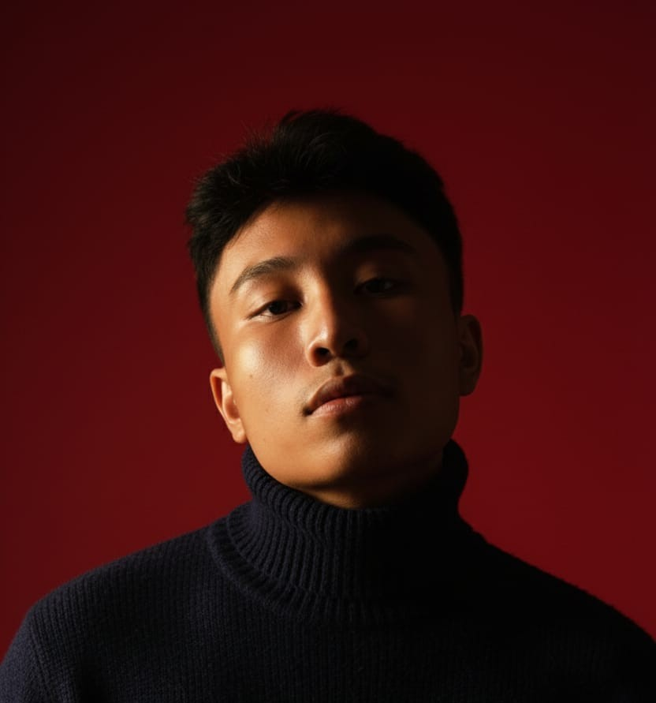
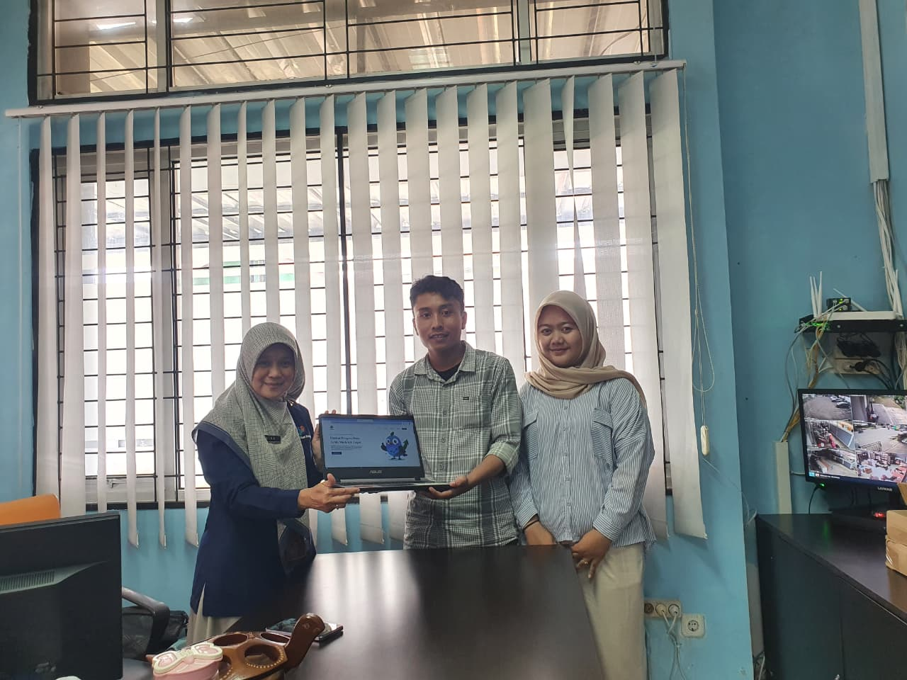

Saya merancang dan membangun interface digital yang indah, intuitif, dan berkesan. Menggabungkan kreativitas desain dengan keahlian frontend untuk menciptakan pengalaman pengguna yang luar biasa.

Mengenal lebih dekat siapa di balik desain-desain ini.

Saya adalah seorang UI/UX designer dan frontend developer yang passionate dengan pengalaman dalam merancang dan membangun interface yang memukau. Fokus saya adalah menciptakan desain yang intuitif dan pengalaman pengguna yang menyenangkan.
Saya percaya bahwa desain yang baik adalah perpaduan sempurna antara estetika dan fungsionalitas. Setiap proyek yang saya kerjakan selalu mengutamakan user experience, visual consistency, dan detail pixel-perfect.
Ketika tidak sedang mendesain atau coding, saya biasanya mengeksplorasi tren desain terbaru, membaca artikel tentang UX research, atau bereksperimen dengan animasi dan micro-interactions.
Teknologi dan tools yang saya gunakan sehari-hari.
Membangun interface yang responsif dan interaktif dengan teknologi web modern.
Membangun layout yang adaptif dan sempurna di setiap ukuran layar.
Menguasai tools desain modern dan workflow kolaborasi tim.
Merancang antarmuka yang cantik, intuitif, dan user-centered.
Beberapa proyek terbaik yang pernah saya kerjakan.
Perjalanan profesional saya sejauh ini.
Punya proyek menarik? Mari berkolaborasi!
Saya selalu terbuka untuk diskusi tentang proyek baru, ide kreatif, atau kesempatan untuk menjadi bagian dari visi Anda.